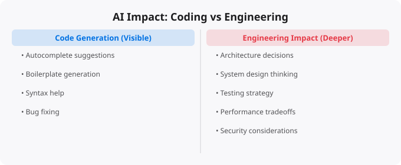

When people talk about AI's impact on software development, they almost always focus on code generation — AI writing code faster, AI autocompleting functions, AI suggesting solutions. This is real and significant. But it misses the deeper and more important transformation: AI is changing software engineering, not just coding. The distinction matters because engineering and coding are different skills with different leverage, and AI affects them differently.
Coding is the act of writing instructions in a programming language. Engineering is the discipline of designing, building, and maintaining systems that reliably solve real problems. Every engineer codes, but not everyone who codes is doing engineering. The difference lies in scope, judgment, and ownership. Engineers think about systems. They consider how components interact, how requirements will change, how the system fails, how it can be understood and modified by others, and how it performs under real-world conditions. Coding is a necessary skill for software engineering, but it is not the entirety of it — and it is the part that AI is most directly affecting.
AI coding tools — GitHub Copilot, Cursor, Claude, and similar assistants — are genuinely accelerating code production. Functions that might have taken 30 minutes to write from scratch can be generated in seconds. Boilerplate code that engineers previously found tedious to write can be produced automatically. Simple transformations, data manipulations, and standard patterns can be generated reliably by AI without significant manual effort. This is real productivity improvement. But the nature of the acceleration matters. AI is most effective at generating code that fits established patterns — the kind of code that a reasonably experienced developer could write relatively quickly with some thought. AI is significantly less effective at the genuinely hard parts of software engineering: the ambiguous problems, the novel designs, the debugging of complex system interactions, the architectural decisions with long-term consequences.
As AI gets better at generating code from specifications, the quality of the specification becomes the limiting factor. If you give AI a precise, well-thought-out description of what you want — including the edge cases, the performance requirements, the error handling, and the integration constraints — it can often produce useful code. If your specification is vague or incomplete, the generated code will be wrong in ways that may be subtle and hard to detect. This means that the engineering skills of requirements analysis, system specification, and architectural thinking become more valuable as AI handles more of the code production. The engineers who can think clearly about what needs to be built — before anyone writes code — are providing higher leverage value than ever before.
When code was primarily hand-written, engineers naturally developed intuition for its quality through the process of writing it. You understand code you wrote. AI-generated code creates a different challenge: you have code that may be syntactically correct and even functionally correct in the happy path, but whose edge cases, failure modes, and long-term maintainability you have not thoroughly considered because you did not think through every line. This makes testing and code review skills more important, not less. Engineers working with AI-generated code need strong ability to identify what tests to write, how to think about failure scenarios, and how to evaluate whether generated code is actually correct — not just whether it runs without errors. The shift is from writing code that you inherently understand to evaluating code that someone (or something) else wrote.
Software architecture — the decisions about how a system is structured, what components exist, how they communicate, what data models to use, how the system will be deployed and scaled — remains a deeply human domain. These decisions require understanding the specific context of a business, the constraints of a team, the likely evolution of requirements, the trade-offs between competing technical approaches, and the long-term costs of different choices. AI can generate architectural patterns and make suggestions, but the judgment about which patterns are right for a specific context requires the kind of situated understanding that only humans currently possess.
Software engineering has always been a human activity as much as a technical one. Understanding what users and customers actually need (which is often different from what they say they need), communicating technical trade-offs to non-technical stakeholders, working effectively in teams, managing conflict between technical correctness and business urgency — these are fundamentally human skills that AI does not replace. In fact, as AI accelerates the technical production side of software development, the human collaboration side may become relatively more important. Organizations that can effectively combine technical AI capability with strong human judgment, communication, and collaboration will outperform those that focus only on the technology side.
If you are building a software engineering career in the AI era, prioritize these areas: system thinking and architecture (understanding how to design systems that work reliably at scale), requirements analysis (the ability to translate business needs into precise technical specifications), testing and quality thinking (deeply understanding what makes code correct and how to verify it), code review skills (evaluating code for correctness, maintainability, and security), and communication skills that allow technical concepts to reach non-technical stakeholders effectively. Coding proficiency still matters — you need to be able to evaluate AI output, understand the code you are responsible for, and write code when AI assistance is not appropriate. But coding as a standalone skill is becoming less distinctive and less valuable relative to the engineering judgment that surrounds it.
← Back to BlogArtificial intelligence is evolving faster than almost any other technology domain. The specific tools, models, and capabilities that are current today will look different in a year. This makes staying current a genuine challenge — the half-life of specific technical knowledge is short. The strategies that work: follow the primary sources (research blogs from Anthropic, OpenAI, Google DeepMind, Hugging Face) rather than relying on summaries that may be outdated. Focus on underlying principles that transfer — model architecture concepts, evaluation methods, prompt engineering principles — rather than memorizing specific tool interfaces that will change. Build things with current tools to develop practical intuition, even knowing those specific tools will evolve. The professionals who navigate fast-moving fields best are those who can quickly assess new developments, extract the signal from the noise, and rapidly evaluate what is genuinely significant versus what is marketing.